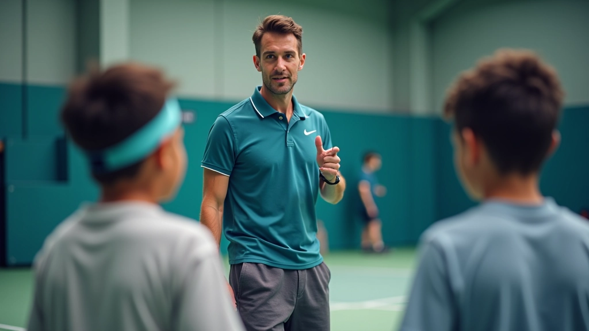
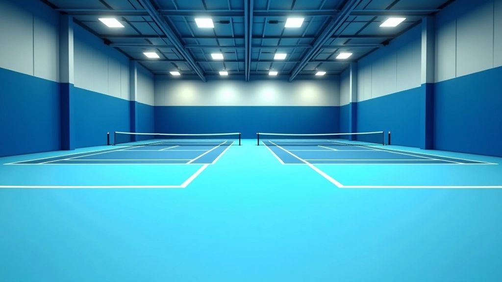
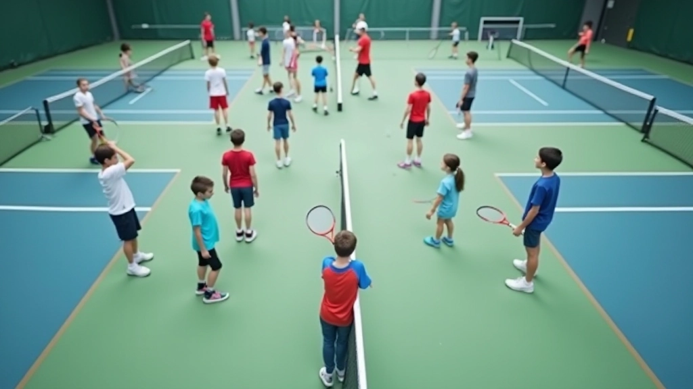

ما الذي تبحث عنه في أكاديمية التنس
معايير حقيقية لاختيار أكاديمية تنس موثوقة — من المدربين والمرافق إلى البرامج والبيئة التدريبية

لماذا اختيار الأكاديمية المناسبة مهم جداً
اختيار أكاديمية تنس ليس مجرد قرار عشوائي. هذا هو المكان الذي سيقضي فيه طفلك وقتاً طويلاً، والمكان الذي سيتعلم فيه المهارات الأساسية والعادات الجيدة. المدربون والمرافق والبيئة — كل شيء يؤثر على تقدم الطفل وحبه للعبة.
نحن نفهم أن الآباء يريدون ما هو الأفضل. لكن "الأفضل" لا يعني بالضرورة الأكثر شهرة أو الأغلى سعراً. يعني: مدربون ذوو خبرة حقيقية، مرافق نظيفة وآمنة، وبرنامج واضح ينمو مع مستوى طفلك.

المدربون: أساس كل شيء
المدرب الجيد يُحدث فرقاً كبيراً. ليس فقط في تعليم التقنية الصحيحة — بل في جعل التدريب ممتعاً وآمناً وخالياً من الإصابات.
ابحث عن مدربين يملكون:
- خبرة حقيقية في تدريب الناشئين (5 سنوات على الأقل)
- شهادات معتمدة في تدريس التنس
- قدرة على تصحيح الأخطاء بصبر وإيجابية
- فهم عميق لكيفية تعليم الأطفال بأعمار مختلفة
- سجل حافل مع لاعبين سابقين (اسأل الأكاديمية عن إنجازات طلابهم)
لا تخجل من السؤال عن خلفيات المدربين. أكاديمية موثوقة ستجيب بكل فخر. إذا لم تحصل على إجابات واضحة، هذه علامة تحذير.

المرافق: النظافة والأمان أولاً
المرافق الجيدة تعني أكثر من مجرد ملاعب جديدة. تعني نظافة حقيقية، صيانة منتظمة، وإجراءات أمان واضحة.
عند زيارة الأكاديمية، لاحظ:
- هل الملاعب نظيفة وخالية من الشقوق أو الأضرار؟
- هل الإضاءة كافية؟ (يجب أن ترى الكرة بوضوح من أي مكان على الملعب)
- هل الشبكات آمنة وموثوقة؟
- هل هناك مساحة آمنة حول الملاعب؟
- هل الحمامات واضحة ونظيفة؟
- هل يوجد نظام تهوية جيد؟
لا تتردد في السؤال عن جدول الصيانة الدورية. أكاديمية احترافية ستملك سجلاً منظماً.
البرامج والمستويات: التقدم المنطقي
الأكاديمية الجيدة لن تضع كل الأطفال معاً. ستقسمهم حسب السن والمستوى، وستوفر مسار واضح للتقدم.
ابحث عن برامج تشمل:
- فئة تمهيدية للمبتدئين الصغار جداً (4-6 سنوات)
- مستويات محددة بوضوح: مبتدئ، وسيط، متقدم
- فصول أصغر الحجم (8-12 طفل كحد أقصى)
- تقييمات دورية وحوارات مع الآباء
- خيارات تدريب فردي أو في مجموعات صغيرة
- برامج خاصة للمتسابقين الجادين
سؤال مهم: كم مرة يتم فحص مستوى الطفل؟ يجب أن ينتقل إلى مستوى أعلى عندما يكون جاهزاً — ليس بعد وقت محدد فقط.

ما يجب أن تسأل عنه
- كم عدد الأطفال في الفصل الواحد؟
- كم عدد الدروس في الأسبوع؟ كم مدة الدرس الواحد؟
- هل يمكن الحصول على درس تجريبي مجاني أو برسم منخفض؟
- كيف تتعاملون مع الأطفال الذين يخافون من الماء أو الكرة؟
- هل هناك تطبيق أو نظام لتتبع تقدم الطفل؟
- ما هو الجدول الزمني للفحوصات والانتقالات بين المستويات؟
- هل توجد فرص للمشاركة في بطولات محلية؟
البيئة والمجتمع: أكثر من مجرد تدريب
الأطفال الذين يحبون الذهاب إلى الأكاديمية يتقدمون أسرع. لذا، لاحظ البيئة الكلية:
- هل الأطفال يبدون سعداء وآمنين؟
- هل هناك روح فريق حقيقية؟
- هل المدربون يقضون وقتاً في التشجيع والمرح، ليس فقط التصحيح؟
- هل توجد أنشطة اجتماعية أو تجمعات للعائلات؟
- هل يعامل الموظفون الآباء باحترام وتعاون؟
تذكر: طفلك سيقضي ساعات هنا. الراحة والسعادة مهمة مثل المهارات الفنية.
الخطوة التالية: اتخذ قرارك
لا تقرر بناءً على الموقع أو السعر وحده. قم بزيارة شخصية. شاهد درساً. تحدث مع المدربين والآباء الآخرين. اسأل عن التفاصيل. ستشعر بالفرق بين أكاديمية عادية وأكاديمية حقيقية موثوقة.
اختيار جيد الآن = طفل سعيد ومتقدم في السنوات القادمة. إنها استثمارية في صحته وثقته وحبه للعبة.
ملاحظة مهمة
النتائج والتقدم يختلف من طفل إلى آخر. كل طفل له وتيرته الخاصة في التعلم والتطور. الأكاديمية الجيدة ستحترم هذا الاختلاف وتعمل وفقاً لاحتياجات كل طفل الفردية.